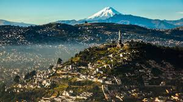
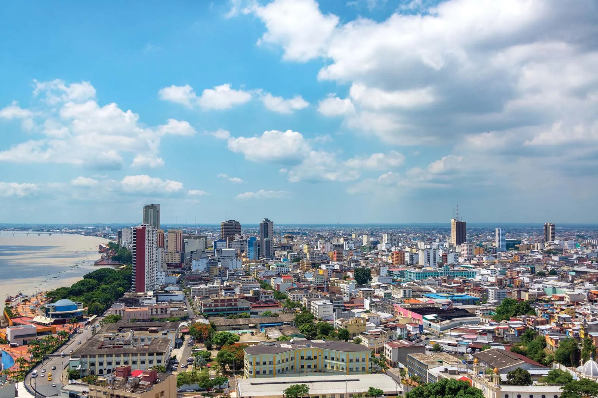
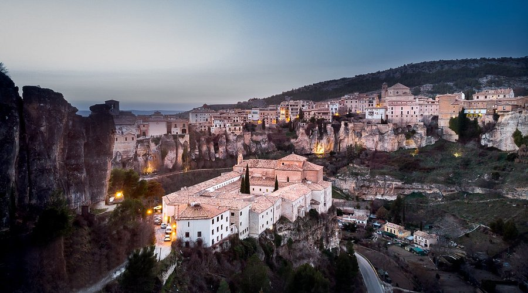
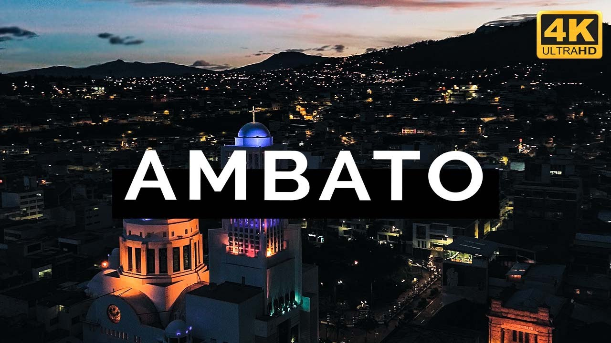

Le Città Principali
Dai monumenti coloniali ad alta quota fino ai grandi centri commerciali e portuali: i veri motori del Paese.

Quito
CapitaleSituata a 2.850 metri di altitudine, sorge sulle ceneri di un'antica città inca. Il suo centro storico coloniale è il meglio conservato d'America.

Guayaquil
EconomiaLa città più popolosa e il porto commerciale più importante sul Pacifico. Famosa per il suo moderno lungomare e il quartiere artistico di Las Peñas.

Cuenca
CulturaPatrimonio UNESCO, incanta per la sua architettura in stile europeo e l'atmosfera intellettuale. È la culla dei famosi cappelli di Panama.

Ambato
CommercioSoprannominata "Festa delle Frutta e dei Fiori" per la sua rinascita dopo il terremoto del 1949. È un hub stradale e commerciale strategico nel centro delle Ande.